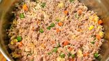

Homemade Dog Food
Description
Making food for your dog at home can be quick and easy. This recipe is found on Allrecipes.
This easy dish combines ground turkey, rice and veggies to make a quick, healthy dinner for your furry friends.
Ingredients:
- 1 pound ground turkey
- 6 cups water
- 2 cups brown rice
- 1 tsp dried rosemary
- 16 ounces frozen veggies, broccoli, carrots, or cauliflower combo
Steps
- Place ground turkey, water, and rosemary in a large dutch oven. Stir to mix evenly.
- Bring mixture to a boil over high heat.
- After a boil is reached, reduce heat to low and simmer for 20 minutes.
- Add frozen veggie mix into the turkey and rice mixture. Cook for an additional 5 minutes.
- Remove from heat and allow to cool. Refrigerate until serving.
Home